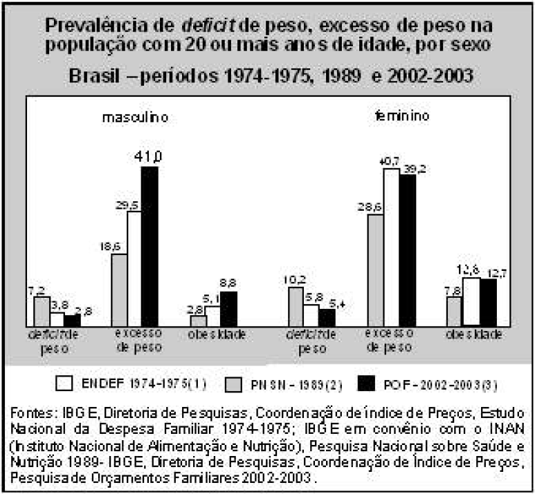

A figura abaixo indica a evolução do perfil
antropométrico-nutricional da população adulta
brasileira, comparando-se estimativas da Pesquisa de
Orçamentos Familiares (POF) de 2002-2003 com a
Pesquisa Nacional de Saúde e Nutrição (PNSN) de
1989 e o Estudo Nacional de Despesa Familiar
(ENDEF) de 1974-1975.

Com relação aos dados apresentados na figura e às
possíveis inferências a partir deles, assinale a opção
correta.
-
Observa-se que, nos anos avaliados na pesquisa, tanto
para homens quanto para mulheres, houve aumento no
excesso de peso, como consequência, provavelmente,
da implantação de programas sociais de transferência
de renda.
-
De acordo com as pesquisas, entre os anos avaliados,
houve declínio dos deficits ponderais tanto para homens
quanto para mulheres.
-
Independentemente de os homens apresentarem mais
fatores obesogênicos, no período avaliado, as mulheres
apresentaram maior crescimento relativo tanto do
excesso de peso quanto da obesidade.
-
O aumento do excesso de peso e da obesidade
observado entre as mulheres é distinto nos dois
períodos demarcados pelas três pesquisas, sendo
maior entre as décadas de 70 e 80 em virtude das
maiores reduções de deficit de peso nesse mesmo
período.
-
A comparação entre os dados obtidos nos três estudos
fica comprometida pelo fato de apenas o ENDEF e a
PNSN serem estudos de representatividade nacional.